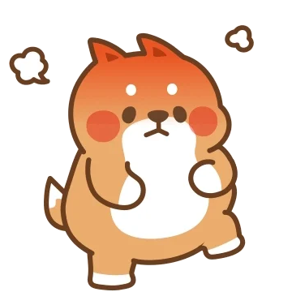
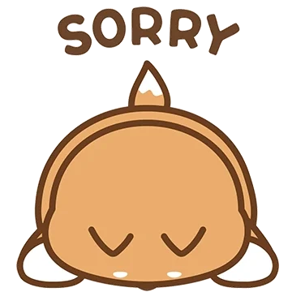
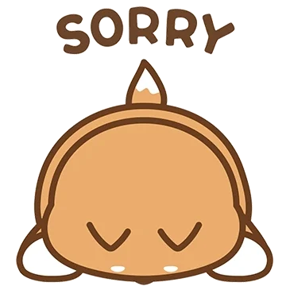
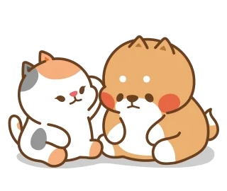

Tui thực sự xin lỗi
Tui biết là đôi khi tui làm trang giận rất nhiều

nhưng trang lại bỏ qua vì tui đây là lần đầu tui thích một người và một phần do sự chờ đợi của tui
Vì đã khiến trang thất vọng về tui như vậy
Vì đã khiến trang khóc

Tui biết khi tui nói tui chỉ thích trang 80% trang sẽ rất sốc nói thì là vậy
nhưng tui vẫn làm và trao cho trang những gì tui có chứ không có nhân dượng một chút nào cả
Tui sai rồi,Tui xin lỗii
 

Tui thật sự rất nhớ trang
Tui chỉ muốn một cô gái duy nhất là trang thôi chứ không phải ai khác cả
Tui thật sự muốn tiếp tục bên trang
Trang là lý do tui không muốn bên ai khác

Trang có thể cho tui một cơ hội không?